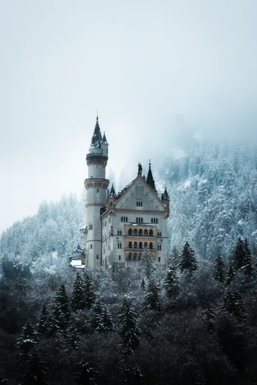
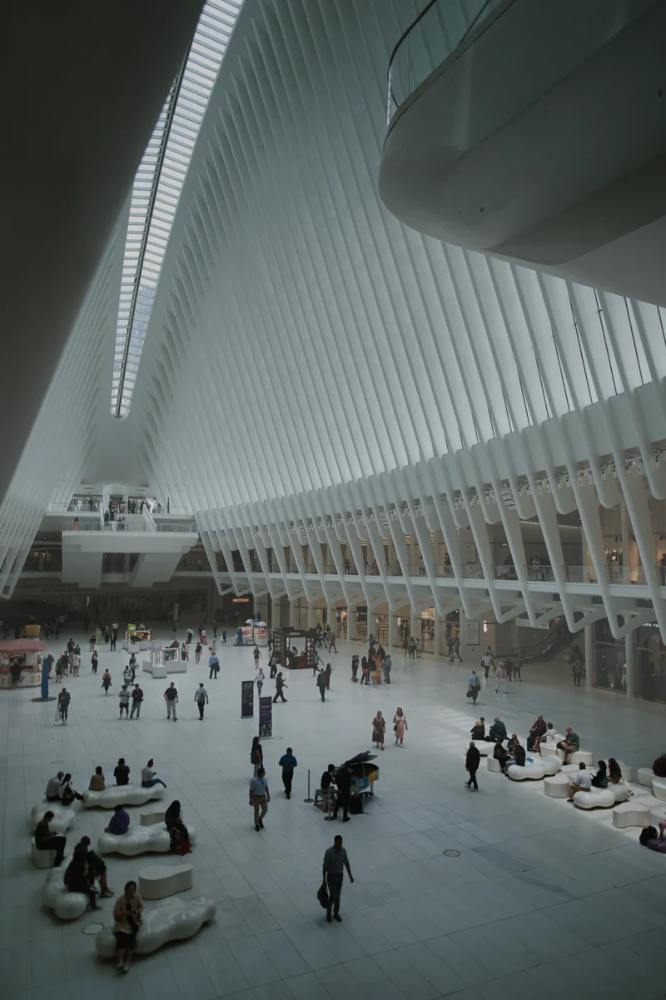
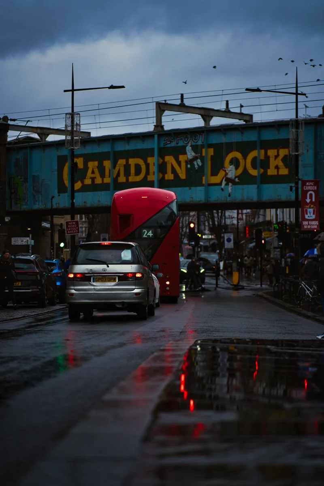

Quantum engineer & curious observer
Nicholas
Gialouris.
Exploring the delicate structures of
quantum information. Finding beauty
in the world beyond them.

A schematic of lattice surgery on 21 data and 20 auxiliary qubits
- Data qubits of the patch carrying the logical state
- Data qubits of a patch in logical |0⟩
- X-type stabilizer
- Z-type stabilizer
- Qubit not in use

Through my lensSmall scales.
Big questions.
My work sits at the intersection of quantum information,
experimental physics, and scientific software.
Alice & Bob
01Quantum error correction / ETH ZürichMoving quantum
information.Logical-qubit teleportation through lattice surgery. Now on arXiv.2026
Quantum information is fragile. Encoding one logical qubit redundantly in many physical qubits allows errors to be detected and corrected. It also raises a new question: how do we move a state from one logical qubit to another while it stays encoded?
For my master’s thesis in Prof. Andreas Wallraff’s group, I worked on the experiment that teleported logical states between two distance-three surface-code logical qubits using lattice surgery, on a processor with 41 superconducting qubits. I developed software to implement, simulate, and analyse the experiments, benchmarked decoders, and built an error budget from circuit-level noise simulations.
Co-author · Teleportation of Logical Qubits using Lattice Surgery with Superconducting Circuits
L. Hofele, Y. Song, Á. Márton, …, N. Gialouris, …, A. Wallraff (19 authors) · Preprint, arXiv:2611.23165 (2026)
02Fault-tolerant computing / Alice & BobThe energy behind
the computation.Estimating the energy that fault-tolerant quantum algorithms consume on cat-qubit hardware.2025–26
Running a quantum algorithm fault-tolerantly costs physical qubits, time, and energy. How much depends on the hardware parameters and on the error-correction choices.
During my research internship at Alice & Bob in Paris, I developed workflows to estimate the energy consumption of fault-tolerant algorithms on cat-qubit architectures. I also contributed to anb-estimator, the open-source resource estimator for Alice & Bob’s cat-qubit and repetition-code architecture, written in Rust and Python.
Explore anb-estimator03Quantum optics / ETH ZürichListening to
the quietest light.A balanced homodyne detector for squeezed light, and modelling of photonic cat states.2025
Squeezed light has less noise in one quadrature than the vacuum state. Measuring that reduction requires a detector whose own electronic noise lies well below the shot-noise level.
In Prof. Rachel Grange’s group, I designed a balanced homodyne detector targeting up to 2 GHz bandwidth, with calculated electronic noise about 10 dB below shot noise. My work included custom PCB design and GHz-range circuit characterization. I also modelled deterministic photonic cat-state generation in lithium niobate on insulator using QuTiP; this work contributed to a Quantum 2.0 conference paper.
Co-author · Deterministic Photonic Schrödinger Cat States by Engineered Two-photon Dissipation
Quantum 2.0 Conference and Exhibition, QM4A.1 (2026)
The world,
as I see it.
Light, places, and the moments
that make me look twice.



Sometimes,
the most interesting
thing is simply
what’s there.





 Nicholas / Zürich, CH
Nicholas / Zürich, CHMore than
one perspective.
I’m Nicholas, a quantum engineer based in Zürich. My work has taken me from quantum optics at ETH Zürich to cat-qubit resource estimation at Alice & Bob in Paris, and back to ETH Zürich for quantum error correction.
Research is one part of who I am. Photography, creative work, and sport are others. This space brings those different sides together.
- Education
- MSc Quantum Engineering, ETH Zürich, 2024–2026
BSc Physics, ETH Zürich, 2021–2024 - Teaching
- Teaching assistant, Mathematical Methods for Physicists II, ETH Zürich
- Tools
- Python, Rust · Stim, QuTiP, Qiskit, Qualtran · JAX, PyTorch · KiCad and GHz-range lab electronics
- Languages
- English and German, fluent · French, conversational